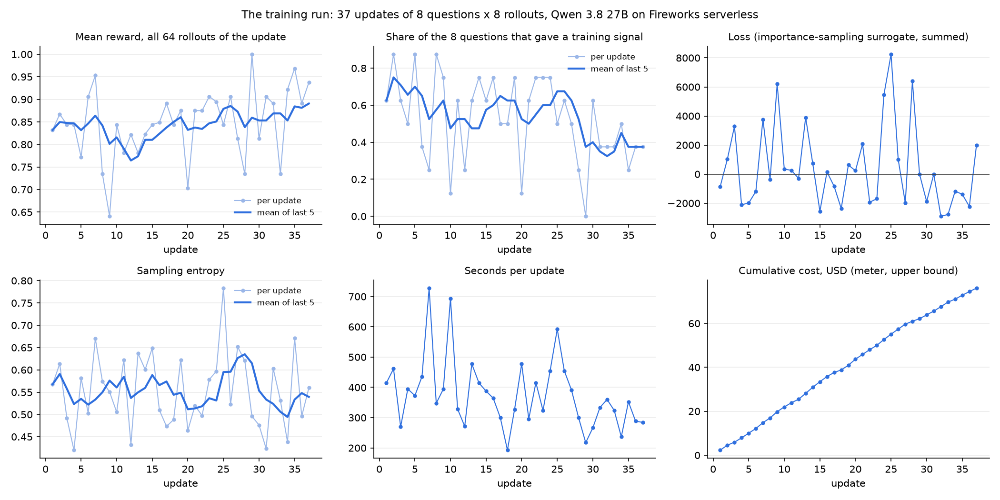
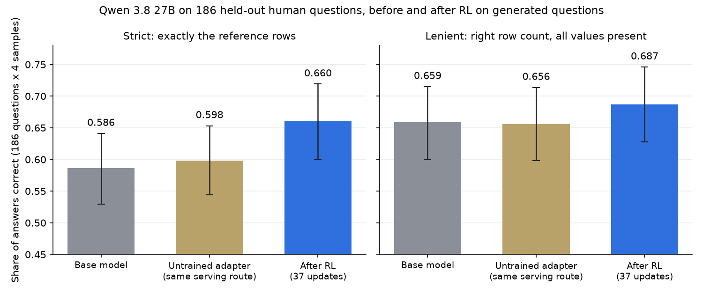
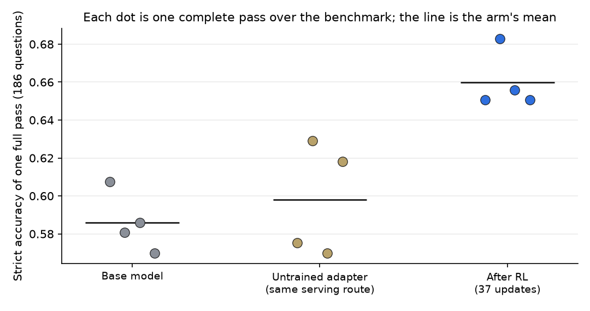
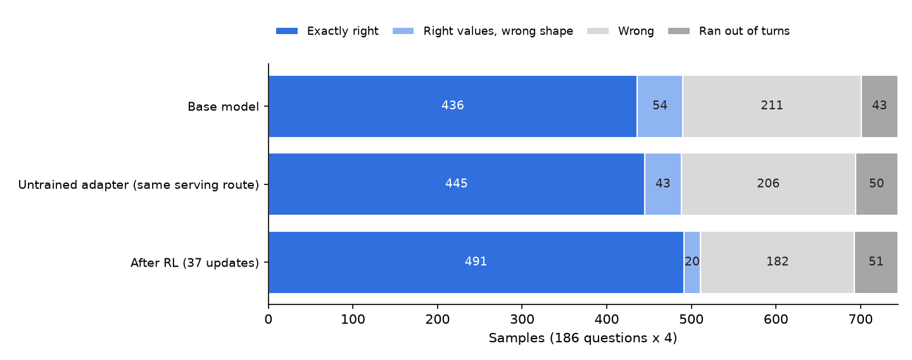
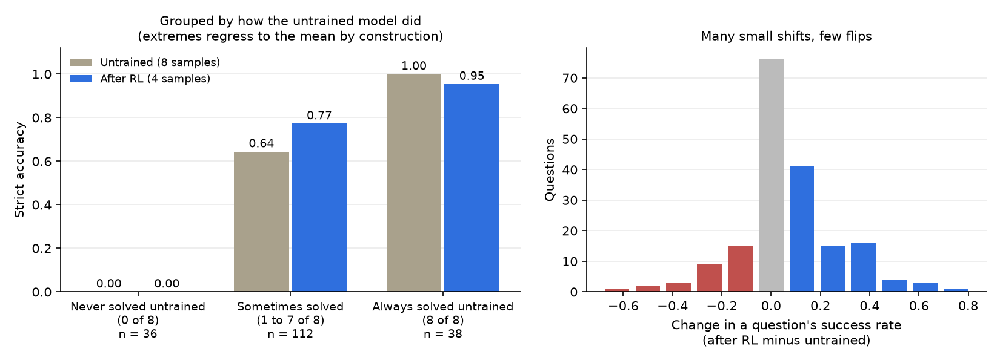
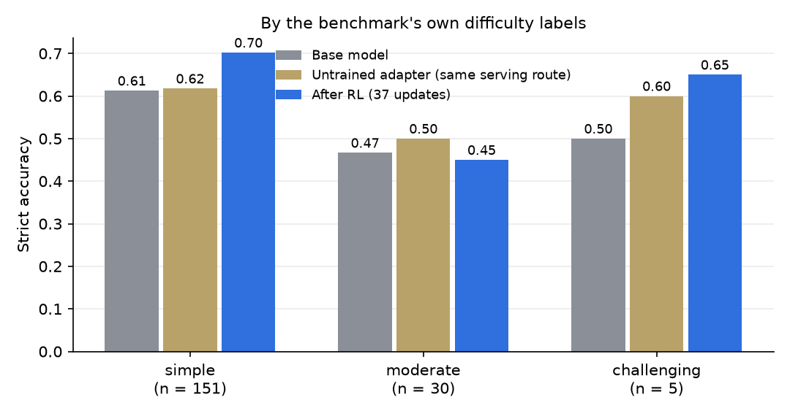

In one paragraph. We took an open model, Qwen 3.8 27B, and trained it with reinforcement learning to answer questions about a graph database by writing Cypher queries. Training used only machine-generated questions. We then tested it on 186 human-written questions it had never seen, from the BIRD benchmark. Strict accuracy rose from 0.598 to 0.660, a gain of 6.2 points (95% interval 3.1 to 9.4), measured against an untrained adapter served the same way. The gain cleared a bar we fixed before looking. It came from the model getting more reliable on questions it could already sometimes answer; it did not solve a single question it had never solved before. The whole experiment ran on Fireworks' serverless training API, with no GPU to provision, for about $119.
The data is one database from the BIRD text-to-SQL
benchmark: codebase_community, a dump of the statistics Stack Exchange site. We re-modelled
it as a property graph in Neo4j: 649,846 nodes (users, posts, comments, votes, post
revisions, tags, badges) and 1,380,394 relationships of 14 types.
The model is an agent. It gets a question, the graph schema, and one tool, run_cypher,
which runs a read-only query and returns up to 50 rows. It can call the tool up to 8 times,
look at what comes back, and then give a final answer. We score the last query that ran
successfully, by executing it again without the 50-row display limit and comparing the rows
with a reference answer.
Two scorers, both automatic:
The gap between the two is useful. It separates "found the right thing but returned it in the wrong shape" from "found the wrong thing". We call the first form and the second substance.
The benchmark. BIRD supplies 186 human-written questions for this database, with difficulty labels (151 simple, 30 moderate, 5 challenging). These are evaluation only. No training question was derived from them, and no rule for generating training questions, with one declared exception: generated questions carry a hint about as often as the benchmark's do (172 of 186 there, 284 of 300 in the training file).
The training data. 300 generated questions over the same graph, built from 135 query structures of 0 to 4 hops, each stored with its reference rows. The run used 296 of them (37 updates of 8). Example:
Which 10 tags with stored usage count between 487 and 911 inclusive rank highest by stored usage count? Show their names and counts.
The benchmark questions read differently:
List out the dates that users who are located in Rochester, NY obtained their badges?
So the test is transfer: train on synthetic questions, measure on human ones.
Standard policy-gradient RL, in the form the Tinker cookbook's rl/train.py implements:
A group where all 8 rollouts get the same reward carries no signal and is dropped. This matters below.
We ran 37 updates. Settings were fixed in advance and are the same as a sibling experiment on a smaller model on another platform; this post is about the Fireworks run only.
Fireworks' Training API is compatible with the Tinker client: forward_backward,
optim_step, save_weights_for_sampler, sample. The training loop, environment and reward
are imported unchanged from the cookbook recipe and checked against pinned file hashes. Only
the service client is swapped, with a shim of about 630 lines.
What worked as documented. On the serverless route there is nothing to provision: you
open a session against a shared trainer, train, and sample your latest weights in the same
session. Billing is per token. Log-probabilities come back from forward_backward, which the
loop needs. A two-update trial cost $1.62 and ran end to end the first time.
What the shim had to bridge.
save_weights_and_get_sampling_client, which Fireworks does not
offer as one call. The shim does save_weights_for_sampler and then opens a sampler on
the returned path.Evaluating a trained adapter. A serverless adapter can only be sampled inside a live training session. Once the session closes, the documented route is to promote the checkpoint and deploy it on dedicated hardware. Saved training checkpoints, however, can be loaded into a fresh session. So the evaluator opens a new session, loads the saved state, saves a sampler snapshot without training, and samples that. This worked three days after the training session had closed.
One wall. We had planned to train Qwen3.5-9B, to match the sibling experiment. Models
that small train only on dedicated GPUs, and dedicated GPUs need a payment method on the
account even when it holds prepaid credits: the deployment request returned
payment method is required, and the docs say accounts without one have 0 training GPUs.
The smallest model on the serverless list is the 27B, so that is the model in this post.
A lesson about meters. We wrap every billed call in a cost meter that stops the run at a dollar limit. Ours prices every prompt token at the uncached rate, so it overstates: in the trial it read $2.09 against a bill of $1.62, because 53% of prompt tokens were billed at the cached rate. An upper bound is the safe direction, but we set the stop from it too tightly and the 37-update run finished with $9 of room.

37 updates, 2,368 rollouts, 3.95 million tokens trained, 3.87 hours, with a median of 6 minutes per update. About 93% of each update is sampling, not training.
Three things to read off these curves.
Half the training set was too easy. Of 296 question groups, 155 gave a training signal. 134 were dropped because the model answered correctly on all 8 attempts, and 7 because it failed on all 8. In the first nine updates, before training had done much, the mean reward was already 0.82. So the effective training set was about half its nominal size, and we paid to sample the other half for nothing.
Reward drifted up, and that is weak evidence. Mean reward was 0.821 over the first nine updates and 0.896 over the last nine, and the share of groups giving a signal fell in the last third. Both are what learning would look like. Both are also what easier questions late in a shuffled order would look like, and every update sees different questions. We do not count this as the result.
The loss is not a learning curve. It swings between -2,901 and +8,247 and is positive in 17 of 37 updates. With advantages centred inside each group, this loss is a weighted sum of log-probabilities whose value depends on which rollouts happened to win. It is recorded because it should be, and it tells you nothing about progress. The curve that carries the claim is accuracy on questions held out of training.
We wrote the test down before running it: score only the final checkpoint; four samples per question; compare paired over the 186 questions with a bootstrap; and call it a success only if the gain is at least 5 points and its 95% interval is above zero.

| 186 questions, four samples each | Base model | Untrained adapter, same route | After RL |
|---|---|---|---|
| Strict | 0.586 | 0.598 | 0.660 |
| Lenient | 0.659 | 0.656 | 0.687 |
(The error bars in the figure are for each arm on its own and overlap. The test is paired: it compares the same question across arms, which removes the large question-to-question variation. That is why the paired interval is much tighter than the bars suggest.)
Why there are three arms. The base model was sampled through the session's base-only route. The trained adapter was sampled through a loaded checkpoint. Those are different serving paths, and a difference between them would look exactly like a training effect. So we evaluated a never-trained adapter through the same path as the trained one. It scored +0.012 against the base (interval -0.020 to +0.043): no route effect detected, though one of up to about four points is not excluded. The claim about training is therefore made against this control, not against the base. Against the base the gain would have read +0.074; we report the smaller number.

Each dot is a complete pass over the 186 questions. A single pass moves by several points from sampling alone, which is why one before-and-after pair would not have been enough.

Counting the 744 samples per arm, against the control: exactly-right answers rose by 46 (445 to 491), while "right values, wrong shape" fell by 23 (43 to 20). As net flows, at most 23 of the 46 are form repairs and at least 23 are answers that were wrong under both scorers before. So roughly half form, half substance. The lenient gain, whose interval sits just above zero, says the same thing.
Form: returning what was asked.
How many badges has the user csgillespie obtained? (reference:
95)
Untrained, the model wrote a correct query half the time and, the other half, added columns nobody asked for:
MATCH (u:User {displayName: 'csgillespie'})
OPTIONAL MATCH (u)-[:EARNED]->(b:Badge)
RETURN u.userId, u.displayName, count(b) AS badgeCount -- 8, csgillespie, 95
After RL, all four samples returned the count alone:
MATCH (u:User {displayName: 'csgillespie'})-[:EARNED]->(b:Badge)
RETURN count(b) AS badgeCount -- 95
In the evaluation: untrained 4 of 8 strict, 8 of 8 lenient; trained 4 of 4. In four fresh attempts per model recorded for the viewer below, both got 4 of 4, so this one illustrates a habit the untrained model has only some of the time.
Substance: not deduplicating when nobody asked.
List out the dates that users who are located in Rochester, NY obtained their badges? (reference: 38 rows)
The untrained model usually added DISTINCT, collapsing badges earned at the same moment and
returning 34 rows. All four control samples did this. It even saw the 38 rows on its first
query and then "cleaned them up":
MATCH (u:User)-[e:EARNED]->(b:Badge)
WHERE u.location = 'Rochester, NY'
RETURN DISTINCT e.date AS date ORDER BY date -- 34 rows, wrong
In the evaluation, all four samples after RL left the rows alone:
MATCH (u:User {location: 'Rochester, NY'})-[e:EARNED]->(b:Badge)
RETURN e.date AS date ORDER BY date -- 38 rows, right
In the evaluation: untrained 2 of 8, trained 4 of 4. The fresh recording was less kind: the
trained model got 1 of 4, once adding DISTINCT again and twice adding a user-id column. Pooled,
untrained 3 of 12 and trained 5 of 8. The direction holds; the "all four" does not. One
example on four samples is an illustration, not evidence, which is why the claim rests on the
paired test over all 186 questions.
A regression, for balance.
Which user has a higher reputation, Harlan or Jarrod Dixon? (reference:
Harlan)
Untrained, 7 of 8 samples returned the name alone. After RL, 3 of 4 returned more than was asked (the reputation beside the name, or both users), which fails strict; in the fresh recording, 4 of 4 did. Pooled: untrained 10 of 12, trained 1 of 8. Training did not uniformly teach "return less"; on this question it pushed the other way.

This is the finding we did not expect. Pool the two untrained arms, giving 8 samples per question, and group the questions by how often the untrained model got them right:
So the 6 points came entirely from making the model more consistent on questions that were already within its reach. RL on this data did not extend that reach.
"Out of this model's reach" is not "impossible", though. In the sibling experiment, the smaller Qwen3.5-9B answered 10 of these 36 correctly at least once across its 12 samples per question, 7 of them before any training. Whatever blocks the 27B on those is not the graph or the question. The right panel shows the same thing from the other side: most questions moved by one sample in eight or not at all, and few flipped outright.

By BIRD's own labels, the gain is on the simple tier (0.62 to 0.70 against the control). The 30 moderate questions did not improve (0.50 control, 0.45 trained). The challenging tier has 5 questions and says nothing.
Two kinds of number, kept apart. Fireworks bills per day, not per job, so the bill cannot be split by component. Our own meter can, but it prices every prompt token at the uncached rate, so it overstates.
What was billed:
| Period | Billed |
|---|---|
| September (first baseline pass and setup) | $3.12 |
| 3 October (trial, training run, eight evaluation passes, tests) | $99.52 |
| 6 October (four control passes) | $16.32 |
| Total | $118.96 |
Where it went, by our meter (upper bound):
| Component | Meter |
|---|---|
| Training, 37 updates (21.6M prompt tokens, 3.5M sampled, 4.0M trained) | $76.07 |
| Evaluation, 12 passes of 186 questions ($4.27 a pass, about 13 minutes each) | $51.26 |
| Trial, tests, two abandoned starts | $8.56 |
| Total | $135.89 |
The bill is 87.5% of the meter's total. The difference is prompt caching: an agent re-sends its growing conversation every turn, and about half of those prompt tokens were billed at the cached rate.
The $118.96 came out of $150 of credit. No hourly resource was ever running, so nothing could be left on by mistake. The one time we did request dedicated hardware, the request was refused and an independent watchdog deleted the queued trainer job within a minute.
Code, journal and ledger: the bird_graph_rl example on the bird-graph-rl branch of
IamAGP/cookbook, a fork of fw-ai/cookbook.
| Claim | File |
|---|---|
| Accuracy, intervals, outcomes, route control | fw_e3_check.py → fw_e3_check.json |
| Figures and their values | blog/make_figures.py → blog/figures/numbers.json |
| Training run | fw_rl_27b_run1b/curves.csv, fireworks_meta.json |
| Pre-registrations, preflights, every billed action | JOURNAL.md (entries FW-T1 to FW-E3) |
| One row per quoted fact | SHARED_LEDGER.md, rows W12 to W23 |
The benchmark is BIRD (CC BY-SA 4.0); the underlying content is Stack Exchange user content.
How this was made. I set the goal and approved every billed run. The Fireworks port, the training run, the evaluations and this text were done by a Claude (Anthropic) session working from its own experiment journal; a second Claude session reproduced the headline numbers from the result files. Training credits were provided by Fireworks. Code, journal and ledger are on the bird-graph-rl branch of IamAGP/cookbook.